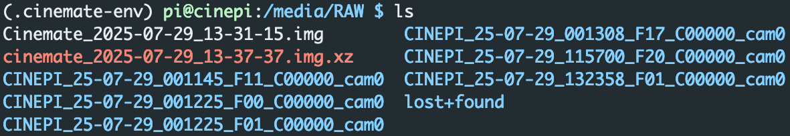

Backing up the SD card#
To create a compressed image using PiShrink#
sudo bash -Eeuo pipefail -c '
# Timestamp like 2025-07-19_19-38-33
ts=$(date +%F_%H-%M-%S)
# Paths on /media/RAW
raw="/media/RAW/Cinemate_${ts}.img" # working image
final="/media/RAW/cinemate_${ts}.img.xz" # desired end-result
# 1 ─ Image the SD-card (pads bad blocks, keeps sparsity)
dd if=/dev/mmcblk0 of="$raw" \
bs=4M conv=noerror,sync,sparse status=progress
# 2 ─ Shrink + parallel-xz compress **in place**
/usr/local/bin/pishrink.sh -s -v -Z -a "$raw"
# 3 ─ Rename the freshly-made .xz to the lowercase style you want
mv "${raw}.xz" "$final"
# 4 ─ Remove the now-unused raw image
rm -f "$raw"
'
Check the name of the resulting file#
cd /media/RAW
ls
Your output will look something like this:

The file ending with .img.xz is your compressed file.
To copy the file to your desktop computer:#
# From the desktop computers terminal
scp pi@cinepi.local:/media/RAW/cinemate_2025-07-29_13-37-37.img.xz ~/Downloads/
# Change the file name to that of you image file.
When unpacking the image, it will inflate to the smallest possible size, even if it was made from a larger SD card. So an Cinemate image created from a 64 GB SD card will inflate to only about 6 GB, allowing for flashing it to SD cards down to 8 GB.